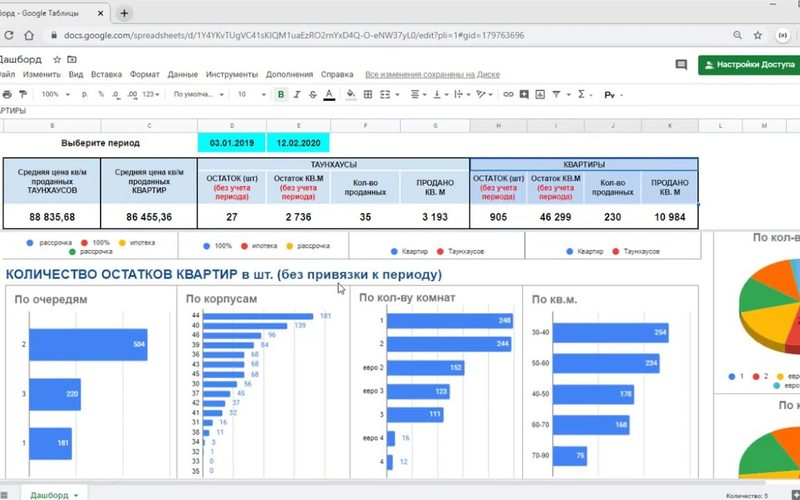

Методы интерпретации признаков и ограничения объяснений
И. И. Иванов
20 мая 2026 · Искусственный интеллект

Полный текст статьи готовится к публикации. Аннотация и метаданные доступны ниже.
Объяснимость модели важна там, где решение влияет на человека. В статье рассматриваются методы интерпретации признаков: глобальные и локальные объяснения, суррогатные модели и анализ чувствительности.
Обсуждаются ограничения объяснений: нестабильность, корреляция вместо причинности и риск ложного доверия. Предложен чек-лист оценки объяснений для прикладных задач.